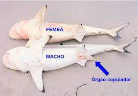
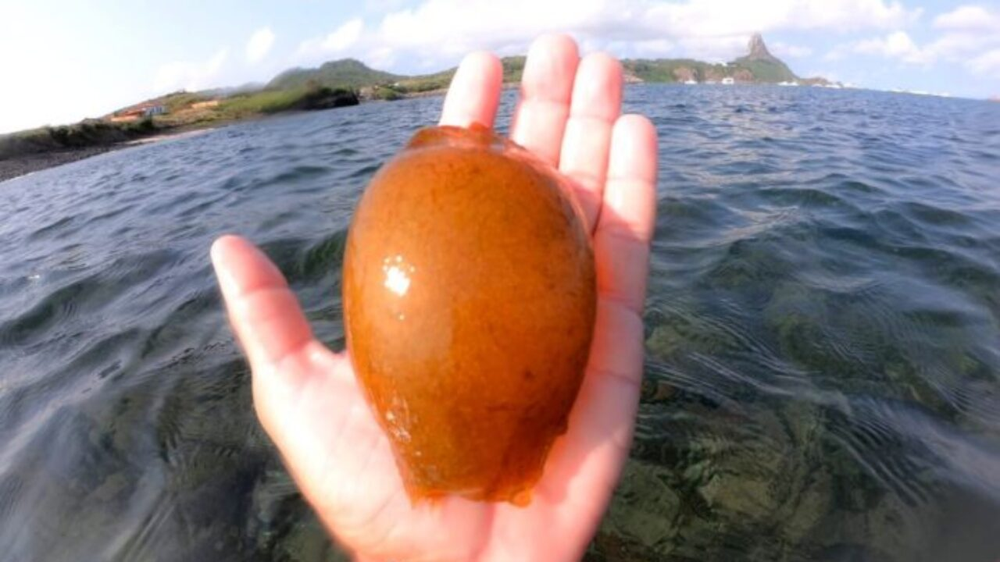
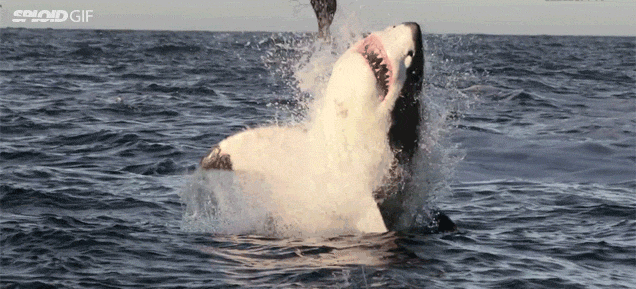

Respiração branquial: assim como todos os peixes, os tubarões são animais que respiram por brânquias, ou seja, utilizam essas estruturas para garantir a retirada de oxigênio da água.
| |
Respiração branquial: assim como todos os peixes, os tubarões são animais que respiram por brânquias, ou seja, utilizam essas estruturas para garantir a retirada de oxigênio da água. |
 |
Corpo hidrodinâmico: os tubarões possuem corpo que auxilia sua movimentação no ambiente aquático, ajudando-os a quebrar a resistência da água. |
 |
Escamas placoides: fazem com que os tubarões apresentem uma superfície que lembra uma lixa. Essas escamas garantem uma natação mais eficiente e possuem uma estrutura semelhante a dentes. |
 |
Nadadeiras: auxiliam na movimentação no ambiente aquático. Movimentos fortes do tronco e da barbatana caudal garantem a movimentação do animal. As barbatanas peitorais e pélvicas auxiliam nas manobras, enquanto as dorsais ajudam como estabilizadoras. |
 |
Ausência de bexiga natatória: tubarões não possuem a bexiga natatória, que é uma estrutura relacionada à flutuabilidade. Para resolver essa questão, os tubarões contam com um fígado grande, que contribui com cerca de 25% da massa do seu corpo, repleto de gordura. Isso faz com que a densidade do animal diminua. |
.jpg) |
Estrutura de captação de campos elétricos: os animais, ao apresentarem contração muscular, fazem com que sinais elétricos sejam emitidos. Os tubarões são capazes de captar esses campos elétricos, sendo, portanto, aptos a localizarem uma presa mesmo que ela esteja escondida. |

|
|
|  |
Claspers: estruturas encontradas nos tubarões machos que funcionam como órgãos responsáveis pela deposição do gameta no interior do corpo da fêmea. Devido a essa característica, dizemos que a fecundação do tubarão é interna. Cloaca: os tubarões apresentam cloaca, ou seja, possuem uma câmara na qual desembocam o sistema reprodutor, excretor e digestório. |
|  |
Podem ser ovíparos, ovovivíparos ou vivíparos: existem tubarões capazes de botar ovos (ovíparos), tubarões que retêm os ovos em seu oviduto (ovovivíparos) e tubarões que são capazes de garantir o desenvolvimento do seu filhote no interior do útero (vivíparos). |
|  |
Muitas pessoas conhecem os tubarões como grandes predadores que se alimentam de animais grandes, como as focas. Alguns tubarões realmente apresentam esse tipo de comportamento, sendo esse o caso do tubarão-branco, uma espécie que se alimenta, além de focas, de peixes e até tartarugas-marinhas. Vale salientar, no entanto, que nem todos os tubarões possuem esse comportamento. Esse é o caso, por exemplo, do tubarão-baleia, o qual é classificado como filtrador. Esse animal alimenta-se, principalmente, de plâncton. |
Apesar de serem animais que se reproduzem de maneira sexuada, há relato de um tubarão-martelo fêmea que se reproduziu sozinho, sem necessidade de um macho, em um zoológico nos Estados Unidos. Esse indivíduo reproduziu-se assexuadamente por partenogênese.
Os tubarões podem apresentar gestação com mais de um filhote, sendo observado em alguns casos a morte de um filhote por outro ainda dentro do útero. Quando um filhote devora o outro ainda dentro do corpo da mãe, dizemos que houve um canibalismo intrauterino.
Ataques de tubarão são raros em todo o mundo. Uma pesquisa realizada nos Estados Unidos mostrou que mais pessoas morreram, entre 2001 e 2013, atacadas por cachorros (364 óbitos) do que em decorrência de ataques de tubarão (11 óbitos).
Os tubarões apresentam um olfato bastante apurado. Alguns tubarões são capazes de responder a substâncias em concentrações menores que uma parte por 10 bilhões.
O tubarão-branco, quando se alimenta de mamíferos, como focas, mata esses animais por sangramento. Nessas situações, o que se observa é que o tubarão segura a foca com sua maxila até que a presa pare de sangrar, então ele retira grandes pedaços do animal. No caso dos leões-marinhos, que são presas mais fortes, os tubarões prendem e soltam o animal por várias vezes até que esse morra por hemorragia.
O tubarão-branco é o tubarão mais conhecido e também o mais temido. Um dos motivos para a “má fama” dos tubarões-brancos é o filme Tubarão, dirigido por Steven Spielberg e lançado em 1975. A obra, que mostra um grande tubarão-branco atacando turistas de uma praia, foi um grande sucesso, ganhando o Oscar de melhor trilha sonora original, melhor mixagem de som e melhor edição.
| Especies | Tamanho | Peso |
| Tubarão-Baleia | 14 a 21,9 metros | 19 toneladas |
| Tubarão-Peregrino | 7 a 8,5 metros | 5,2 toneladas |
| Tubarão-Branco | 4,5 a 6,4 metros | 5,2 toneladas |
| Tubarão-Lixa | 2,1 a 2,3 metros | 60kg |